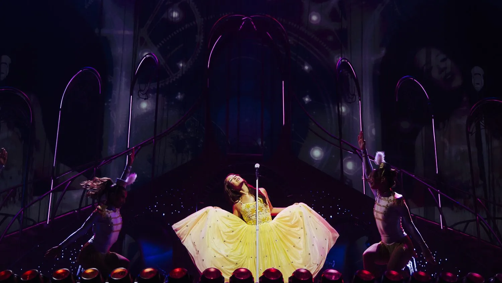

Laufey izlandi–kínai származású énekesnő, dalszerző és zenész, aki különleges módon ötvözi a jazzt, a klasszikus zenét és a modern popzenét. Gyönyörű hangja és álomszerű dallamai olyan hangulatot teremtenek, mintha egy régi romantikus filmbe csöppennénk. Dalaiban a szerelem, a szívfájdalom, a vágyakozás és az emberi érzések legapróbb részletei is megelevenednek. Olyan népszerű dalokkal hódította meg a hallgatók szívét, mint a *From the Start*, a *Valentine* és a *Let You Break My Heart Again*. Zenéje egyszerre időtlen, meghitt és érzelmekkel teli, így minden dala egy külön kis történetet mesél el. Ez az oldal Laufey zenéjének, tehetségének és annak a különleges világnak állít emléket, amelyet dalaival teremt meg.
